Ver código
options(
knitr.table.format = "html",
scipen = 999
)options(
knitr.table.format = "html",
scipen = 999
)library(tidyverse)
library(kableExtra)
library(agricolae)
library(RColorBrewer)
library(ggplot2)
library(knitr)Las variables aleatorias y las distribuciones de probabilidad son conceptos fundamentales dentro de la estadística, ya que permiten modelar y analizar fenómenos en los que interviene el azar. A través de estas herramientas es posible describir el comportamiento de los datos, así como calcular e interpretar probabilidades asociadas a distintos eventos.
Las variables aleatorias pueden ser discretas o continuas, dependiendo de los valores que puedan tomar, y cada una se estudia mediante funciones que representan su comportamiento probabilístico. Estas funciones permiten comprender cómo se distribuyen los valores y facilitan la toma de decisiones en situaciones de incertidumbre.
En este taller se desarrollan ejercicios orientados a la interpretación de eventos, el uso de funciones de distribución y el cálculo de probabilidades, con el fin de fortalecer la comprensión de estos conceptos y su aplicación en diferentes contextos.
knitr::include_graphics("H:/TALLER/Variables Aleatorias/R Estadistica 2/ej 1.png")
Teoría: Formalización de Sucesos y Operadores Lógicos En estadística, un suceso es un subconjunto de resultados posibles de una Variable Aleatoria X. Para definirlos correctamente, utilizamos la notación de intervalos:
Intervalos de Desigualdad:
Estrictos (< o >): El valor límite no se incluye. Se usa para “inferior a” o “superior a”. No estrictos (\leq o \geq): El valor límite se incluye. Se usa para “no sobrepasa”, “al menos” o “o superior”.
Operadores Lógicos (Álgebra de Boole):
Intersección (\cap): Equivale al “y”. El suceso ocurre si se cumplen todas las condiciones simultáneamente. Unión (\cup): Equivale al “o”. El suceso ocurre si se cumple al menos una de las condiciones. Suceso Imposible (\emptyset): Ocurre cuando la intersección de dos intervalos es vacía (no hay valores que cumplan ambas cosas a la vez).
ejercicio1_data <- data.frame(
Inciso = c("(a)", "(b)", "(c)", "(d)", "(e)", "(f)", "(g)"),
Descripcion = c(
"Colesterol inferior a 145 mg/dl",
"Colesterol de 250 mg/dl o superior",
"Comprendido entre 200 y 250 mg/dl",
"Superior a 155 y superior a 240 mg/dl",
"Superior a 175 pero no sobrepasa 200 mg/dl",
"Inferior a 180 y superior a 200 mg/dl",
"Inferior a 150 o superior a 250 mg/dl"
),
Formula_Logica = c(
"X < 145",
"X \u2265 250",
"200 < X < 250",
"X > 155 \u2229 X > 240",
"175 < X \u2264 200",
"X < 180 \u2229 X > 200",
"X < 150 \u222a X > 250"
),
Notacion_Final = c(
"X < 145",
"X \u2265 250",
"200 < X < 250",
"X > 240",
"175 < X \u2264 200",
"\u2205",
"X < 150 \u222a X > 250"
)
)ejercicio1_data %>%
kable(
caption = "Ejercicio 1: Formalización de Sucesos de Variable Aleatoria",
col.names = c("Ítem", "Descripción", "Fórmula Aplicada", "Notación Abreviada"),
align = "clcc"
) %>%
kable_styling(
bootstrap_options = c("striped", "hover", "condensed"),
full_width = F,
position = "center"
) %>%
column_spec(4, bold = TRUE, color = "white", background = "#2c3e50")| Ítem | Descripción | Fórmula Aplicada | Notación Abreviada |
|---|---|---|---|
| (a) | Colesterol inferior a 145 mg/dl | X < 145 | X < 145 |
| (b) | Colesterol de 250 mg/dl o superior | X ≥ 250 | X ≥ 250 |
| (c) | Comprendido entre 200 y 250 mg/dl | 200 < X < 250 | 200 < X < 250 |
| (d) | Superior a 155 y superior a 240 mg/dl | X > 155 ∩ X > 240 | X > 240 |
| (e) | Superior a 175 pero no sobrepasa 200 mg/dl | 175 < X ≤ 200 | 175 < X ≤ 200 |
| (f) | Inferior a 180 y superior a 200 mg/dl | X < 180 ∩ X > 200 | ∅ |
| (g) | Inferior a 150 o superior a 250 mg/dl | X < 150 ∪ X > 250 | X < 150 ∪ X > 250 |
ggplot() +
xlim(100, 300) +
# Ejemplo suceso (e): [175, 200]
annotate("rect", xmin = 175, xmax = 200, ymin = 0, ymax = 1, alpha = .2, fill = "blue") +
# Ejemplo suceso (g): <150 y >250
annotate("rect", xmin = 100, xmax = 150, ymin = 0, ymax = 1, alpha = .2, fill = "red") +
annotate("rect", xmin = 250, xmax = 300, ymin = 0, ymax = 1, alpha = .2, fill = "red") +
labs(title = "Representación Visual de Intervalos",
subtitle = "Azul: Suceso (e) | Rojo: Suceso (g)",
x = "Colesterol (mg/dl)", y = "") +
theme_minimal() +
theme(axis.text.y = element_blank(), panel.grid.minor = element_blank())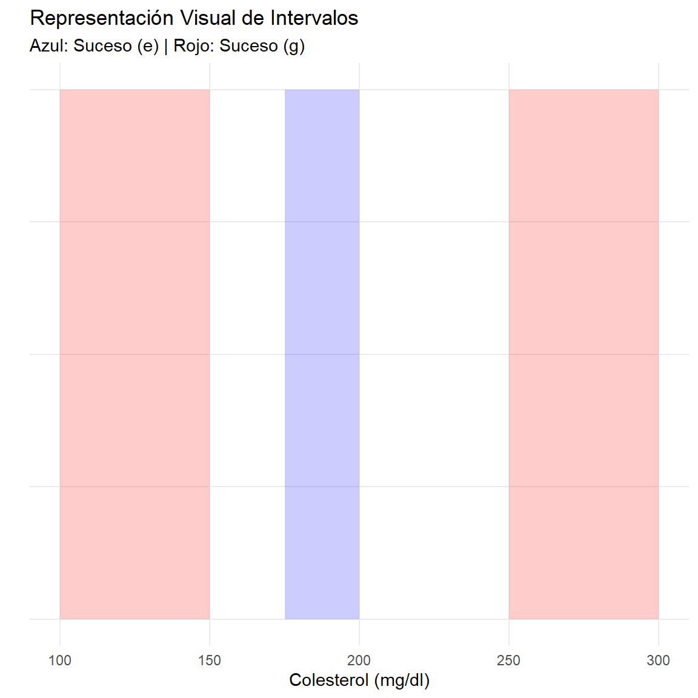
knitr::include_graphics("H:/TALLER/Variables Aleatorias/R Estadistica 2/ej 2.png")
Probabilidades y Función de Distribución (F(x))
En una Variable Aleatoria Discreta, la Función de Distribución F(x) acumula la probabilidad de todos los valores menores o iguales a x.
Fórmulas clave aplicadas:
Definición: F(x) = P(X \leq x)
Probabilidad puntual: P(X = k) = F(k) - F(k^-) (donde k^- es el valor inmediato anterior en el soporte).
Intervalos: P(a \leq X \leq b) = F(b) - F(a^-).
Complemento: P(X > x) = 1 - F(x).
Resultados en términos de F(x):
P(X \leq 0) = \mathbf{F(0)}
P(X = 5) = \mathbf{F(5) - F(3)}
P(X < -3) = \mathbf{F(-7)} (el valor anterior a -3 en el soporte).
P(-2 \leq X \leq 1) = \mathbf{F(1) - F(-3)}
P(X \leq 2.5) = \mathbf{F(2.5)} = \mathbf{F(1)}
P(X < 2.5) = \mathbf{F(1)}
P(X > 1) = \mathbf{1 - F(1)}
P(X \geq -2) = \mathbf{1 - F(-3)}
P(X \in \{0, 1, 3\}) = \mathbf{F(3) - F(-2)}
P(|X| \geq 3) = P(X \leq -3 \cup X \geq 3) = \mathbf{F(-3) + [1 - F(1)]}
P(|X| > 3) = P(X < -3 \cup X > 3) = \mathbf{F(-7) + [1 - F(3)]}
# Soporte dado: {0, 7, 6, -3, -2, 1, 3, -7, 5}
soporte <- sort(c(0, 7, 6, -3, -2, 1, 3, -7, 5))
# Soporte ordenado: -7, -3, -2, 0, 1, 3, 5, 6, 7ejercicio2_solucion <- data.frame(
Inciso = c("(a)", "(b)", "(c)", "(d)", "(e)", "(f)", "(g)", "(h)", "(i)", "(j)", "(k)"),
Suceso = c(
"P[X \u2264 0]",
"P[X = 5]",
"P[X < -3]",
"P[-2 \u2264 X \u2264 1]",
"P[X \u2264 2.5]",
"P[X < 2.5]",
"P[X > 1]",
"P[X \u2265 -2]",
"P[X \u2208 {0, 1, 3}]",
"P[|X| \u2265 3]",
"P[|X| > 3]"
),
Formula_F = c(
"F(0)",
"F(5) - F(3)",
"F(-7)",
"F(1) - F(-3)",
"F(2.5) = F(1)",
"F(1)",
"1 - F(1)",
"1 - F(-3)",
"F(3) - F(-2)",
"F(-3) + [1 - F(1)]",
"F(-7) + [1 - F(3)]"
)
)ejercicio2_solucion %>%
kable(
caption = "Solución Ejercicio 2: Probabilidades expresadas mediante F(x)",
col.names = c("Ítem", "Probabilidad Solicitada", "Expresión en términos de F(x)"),
align = "clc"
) %>%
kable_styling(bootstrap_options = c("striped", "hover"), full_width = F) %>%
column_spec(3, bold = TRUE, color = "white", background = "#2c3e50")| Ítem | Probabilidad Solicitada | Expresión en términos de F(x) |
|---|---|---|
| (a) | P[X ≤ 0] | F(0) |
| (b) | P[X = 5] | F(5) - F(3) |
| (c) | P[X < -3] | F(-7) |
| (d) | P[-2 ≤ X ≤ 1] | F(1) - F(-3) |
| (e) | P[X ≤ 2.5] | F(2.5) = F(1) |
| (f) | P[X < 2.5] | F(1) |
| (g) | P[X > 1] | 1 - F(1) |
| (h) | P[X ≥ -2] | 1 - F(-3) |
| (i) | P[X ∈ {0, 1, 3}] | F(3) - F(-2) |
| (j) | P[|X| ≥ 3] | F(-3) + [1 - F(1)] |
| (k) | P[|X| > 3] | F(-7) + [1 - F(3)] |
df_plot <- data.frame(x = soporte, y = cumsum(rep(1/9, 9)))
ggplot(df_plot, aes(x, y)) +
geom_step(direction = "hv", color = "darkblue", size = 1) +
geom_point(color = "red", size = 3) +
scale_x_continuous(breaks = soporte) +
labs(title = "Representación Genérica de F(x) para el Ejercicio 2",
subtitle = "La función solo cambia de valor en los puntos del soporte",
x = "Valores de la Variable X", y = "Probabilidad Acumulada F(x)") +
theme_minimal()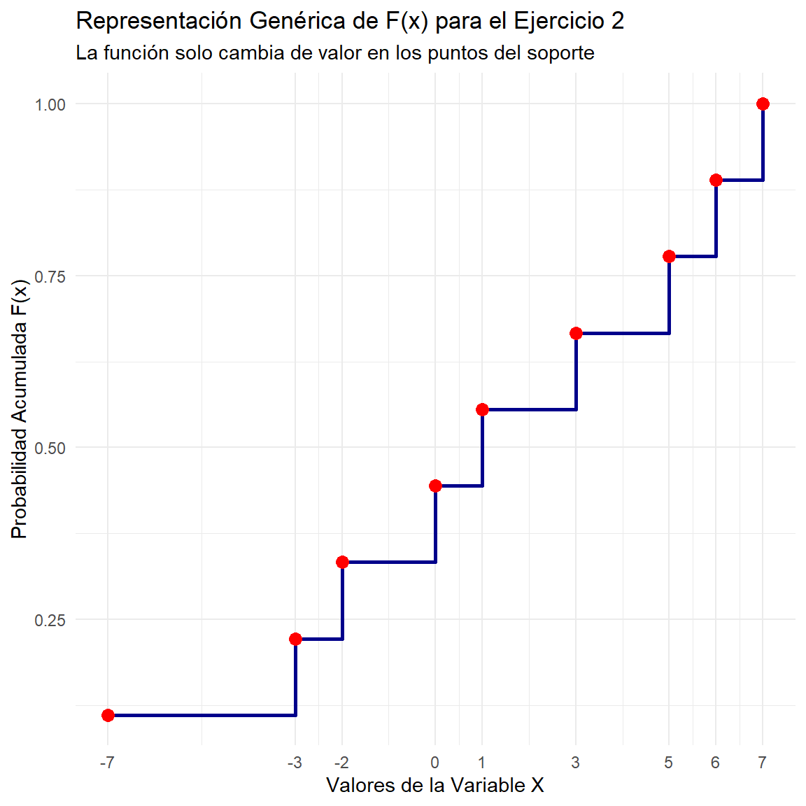
knitr::include_graphics("H:/TALLER/Variables Aleatorias/R Estadistica 2/ej 3.png")
Aquí construimos la Función de Probabilidad p(x) y la Función de Distribución
F(x).Fórmulas:F(x) = \sum_{i=0}^{x} p(i)P(V \geq 2) = p(2) + p(3) o también 1 - F(1)
v_val <- 0:3
p_v <- c(0.4, 0.3, 0.2, 0.1)
f_v <- cumsum(p_v) # F(x) = suma acumuladatabla_3 <- data.frame(Accidentes=v_val, p_v=p_v, F_v=f_v)
tabla_3 %>% kable(caption="Distribución de Accidentes (V)") %>% kable_classic(full_width = F)| Accidentes | p_v | F_v |
|---|---|---|
| 0 | 0.4 | 0.4 |
| 1 | 0.3 | 0.7 |
| 2 | 0.2 | 0.9 |
| 3 | 0.1 | 1.0 |
ggplot(tabla_3, aes(x=Accidentes, y=F_v)) +
geom_step(direction="hv", size=1, color="darkblue") +
geom_point(size=3, color="red") +
labs(title="Función de Distribución F(v)", x="N° Accidentes", y="Prob. Acumulada") +
theme_minimal()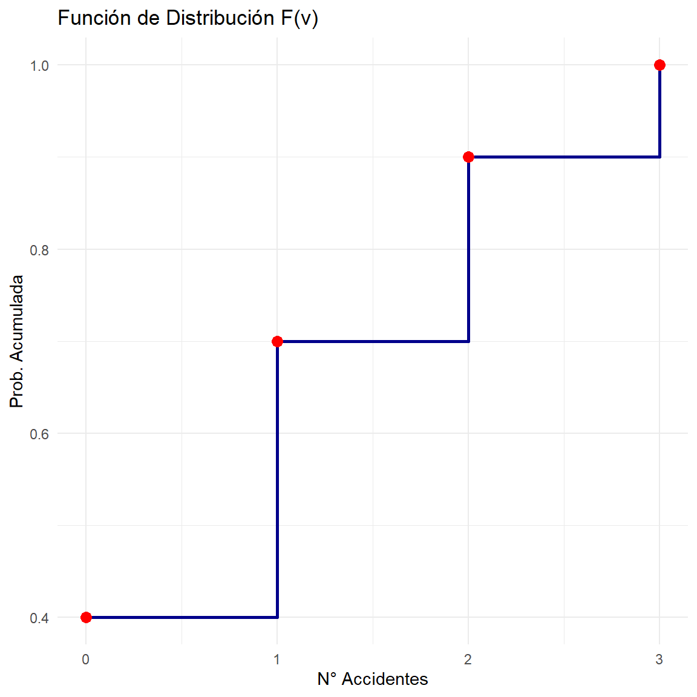
accidentes <- c(0, 1, 2, 3)
p_v <- c(0.4, 0.3, 0.2, 0.1)esperanza <- sum(accidentes * p_v)varianza <- sum((accidentes - esperanza)^2 * p_v)desviacion <- sqrt(varianza)cv_porcentaje <- (desviacion / esperanza) * 100cat("Resultados de Distribución de Accidentes:", "\n",
"Esperanza (Media):", esperanza, "\n",
"Varianza:", varianza, "\n",
"Desviación Estándar:", desviacion, "\n",
"Coeficiente de Variación:", round(cv_porcentaje, 2), "%")Resultados de Distribución de Accidentes:
Esperanza (Media): 1
Varianza: 1
Desviación Estándar: 1
Coeficiente de Variación: 100 %knitr::include_graphics("H:/TALLER/Variables Aleatorias/R Estadistica 2/ejemplo 4.png")
Se nos da directamente la tabla de la función de distribución
F(x).Fórmulas aplicadas:P(X=2) = F(2) - F(1)P(X \geq 3) = 1 - F(2)P(2 \leq X \leq 5) = F(5) - F(1)
f_defectos <- c(0.06, 0.19, 0.39, 0.67, 0.92, 0.97, 1.00)p_x2 <- f_defectos[3] - f_defectos[2] # P(X=2)
p_ge3 <- 1 - f_defectos[3] # P(X>=3) = 1 - F(2)
p_2_5 <- f_defectos[6] - f_defectos[2] # P(2<=X<=5) = F(5) - F(1)
p_2_5_exc <- f_defectos[5] - f_defectos[3] # P(2<X<5) = F(4) - F(2)res_4 <- data.frame(
Inciso = c("P[X=2]", "P[X \u2265 3]", "P[2 \u2264 X \u2264 5]", "P[2 < X < 5]"),
Formula = c("F(2)-F(1)", "1-F(2)", "F(5)-F(1)", "F(4)-F(2)"),
Resultado = c(p_x2, p_ge3, p_2_5, p_2_5_exc)
)
res_4 %>% kable(caption="Resultados Ejercicio 4: Defectos") %>% kable_classic(full_width = F)| Inciso | Formula | Resultado |
|---|---|---|
| P[X=2] | F(2)-F(1) | 0.20 |
| P[X ≥ 3] | 1-F(2) | 0.61 |
| P[2 ≤ X ≤ 5] | F(5)-F(1) | 0.78 |
| P[2 < X < 5] | F(4)-F(2) | 0.53 |
knitr::include_graphics("H:/TALLER/Variables Aleatorias/R Estadistica 2/ej 5.png")
Este ejercicio analiza la variable aleatoria X (suma de los puntos de dos dados). Al lanzar dos dados, hay 6 \times 6 = 36 resultados posibles.
Fórmulas Aplicadas:
Función de Probabilidad
p(x): Se calcula como :\frac{\text{casos favorables}}{36}
Esperanza Matemática E[X]:E[X] = \sum x_i \cdot p(x_i)
Varianza Var(X):Var(X) = \sum x_i^2 \cdot p(x_i) - (E[X])^2
Desviación Típica \sigma: \sigma = \sqrt{Var(X)}
Probabilidad en Intervalos: P(a < X < b) = \sum p(x) para todos los valores de x estrictamente entre a y b
sumas <- 2:12
casos <- c(1, 2, 3, 4, 5, 6, 5, 4, 3, 2, 1)
prob_p <- casos / 36
df_dados <- data.frame(X = sumas, p_x = prob_p)esp_dados <- sum(df_dados$X * df_dados$p_x)
var_dados <- sum(df_dados$X^2 * df_dados$p_x) - (esp_dados^2)
sd_dados <- sqrt(var_dados)p_5d <- sum(df_dados$p_x[df_dados$X > 4 & df_dados$X < 8])p_5e <- sum(df_dados$p_x[df_dados$X >= 4 & df_dados$X <= 8])res_ej5 <- data.frame(
Medida = c("Esperanza E[X]", "Desviación Típica \u03c3", "P[4 < X < 8]", "P[4 \u2264 X \u2264 8]"),
Formula = c("\u2211 x \u00b7 p(x)", "\u221aVar(X)", "p(5)+p(6)+p(7)", "p(4)+...+p(8)"),
Valor = c(esp_dados, round(sd_dados, 4), round(p_5d, 4), round(p_5e, 4))
)
res_ej5 %>% kable(caption = "Estadísticos: Suma de dos Dados") %>% kable_classic(full_width = F)| Medida | Formula | Valor |
|---|---|---|
| Esperanza E[X] | ∑ x · p(x) | 7.0000 |
| Desviación Típica σ | √Var(X) | 2.4152 |
| P[4 < X < 8] | p(5)+p(6)+p(7) | 0.4167 |
| P[4 ≤ X ≤ 8] | p(4)+...+p(8) | 0.6389 |
knitr::include_graphics("H:/TALLER/Variables Aleatorias/R Estadistica 2/ej 6.png")
En este ejercicio, la variable de interés no es el premio directamente, sino la Ganancia Neta (G). Esta se define como la diferencia entre lo que el cliente recibe (el premio) y lo que el cliente paga (el costo de la botella).
Definición de la Variable Ganancia (G): G = \text{Premio} - \text{Costo} Donde el costo es fijo: 100 ptas.
Función de Probabilidad p(g): Se calcula mediante la frecuencia relativa de cada premio sobre el total de chapas (1000): p(g_i) = \frac{f_i}{N}
Probabilidad de “No Perder Dinero”: Un cliente no pierde dinero si su ganancia es cero o positiva: P(G \geq 0) = \sum_{g_i \geq 0} p(g_i)
Probabilidad de no perder: Se suman las probabilidades de los premios \geq 100 ptas: P(G \geq 0) = \frac{250}{1000} + \frac{40}{1000} + \frac{10}{1000} = \frac{300}{1000} = 0.30
premios <- c(0, 50, 100, 500, 1000)
frecuencias <- c(400, 300, 250, 40, 10)
costo <- 100df_6 <- data.frame(
Premio = premios,
Frecuencia = frecuencias,
Ganancia_G = premios - costo,
Probabilidad = frecuencias / 1000
)prob_no_perder <- sum(df_6$Probabilidad[df_6$Ganancia_G >= 0])df_6 %>%
kable(caption = "Distribución de la Variable Ganancia (G)", align = "c") %>%
kable_classic(full_width = F) %>%
row_spec(which(df_6$Ganancia_G >= 0), bold = T, background = "#DFF0D8") # Resalta donde no pierde| Premio | Frecuencia | Ganancia_G | Probabilidad |
|---|---|---|---|
| 0 | 400 | -100 | 0.40 |
| 50 | 300 | -50 | 0.30 |
| 100 | 250 | 0 | 0.25 |
| 500 | 40 | 400 | 0.04 |
| 1000 | 10 | 900 | 0.01 |
ggplot(df_6, aes(x = factor(Ganancia_G), y = Probabilidad, fill = Ganancia_G >= 0)) +
geom_col() +
scale_fill_manual(values = c("#E74C3C", "#27AE60"), labels = c("Pierde", "No Pierde")) +
labs(title = "Distribución de Probabilidad de la Ganancia",
subtitle = paste("Probabilidad de no perder dinero:", prob_no_perder),
x = "Ganancia neta (ptas)", y = "p(g)", fill = "Estado") +
theme_minimal()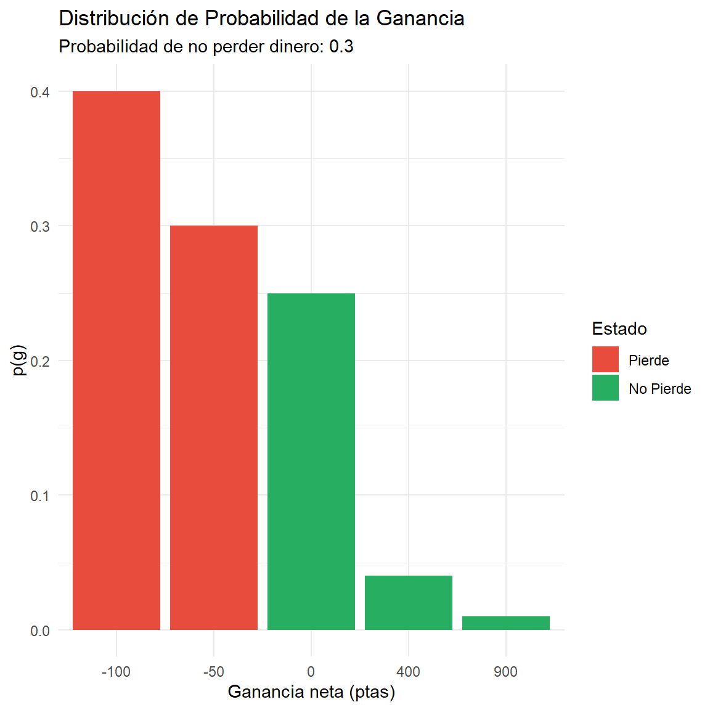
# 1. LIMPIEZA
rm(list = ls())
# 2. DATOS DE ENTRADA (Según tu tabla)
premios <- c(0, 50, 100, 500, 1000)
frecuencia <- c(400, 300, 250, 40, 10)
N <- sum(frecuencia) # N = 1000
costo <- 100
# 3. CÁLCULO DE GANANCIA Y PROBABILIDAD (Fórmulas de tu imagen)
g <- premios - costo # G = Premio - Costo
p_g <- frecuencia / N # p(gi) = fi / N
# 4. MEDIDAS ESTADÍSTICAS
esperanza <- sum(g * p_g)
varianza <- sum((g - esperanza)^2 * p_g)
desviacion <- sqrt(varianza)
cv_pct <- (desviacion / abs(esperanza)) * 100
# 5. RESULTADOS
cat("Esperanza E[G]:", esperanza, "\n",
"Varianza Var(G):", varianza, "\n",
"Desviación sigma:", round(desviacion, 4), "\n",
"CV:", round(cv_pct, 2), "%")Esperanza E[G]: -30
Varianza Var(G): 18350
Desviación sigma: 135.4622
CV: 451.54 %knitr::include_graphics("H:/TALLER/Variables Aleatorias/R Estadistica 2/ej 7.png")
En el ejercicio 7, se presenta una Función de Densidad gráfica (un triángulo). En variables continuas, la probabilidad es el área bajo la curva.
Fórmulas y Lógica Aplicada: 1. Área de un triángulo: Area = \frac{\text{base} \times \text{altura}}{2}. Como el área total debe ser 1 y la base es 50, la altura máxima es 0.04. 2. Probabilidad P(X < k): Es el área acumulada desde el inicio hasta el punto k. 3. Probabilidad P(a < X < b): Es el área del trapecio o región comprendida entre los límites a y b. * Nota: P(X < 25) es exactamente 0.5 por la simetría del gráfico.
f7 <- function(x) {
ifelse(x >= 0 & x <= 25, (0.04/25)*x,
ifelse(x > 25 & x <= 50, 0.04 - (0.04/25)*(x-25), 0))
}p_7a <- integrate(f7, 0, 30)$valuef11 <- function(x) {
x^2 + 3*x + 1
}
p_7b <- integrate(f11, 10, 25)$value
p_7b <- integrate(f7, 10, 25)$valueggplot(data.frame(x = c(0, 50)), aes(x)) +
stat_function(fun = f7, geom = "area", fill = "skyblue", alpha = 0.5) +
geom_area(stat = "function", fun = f7, xlim = c(0, 30), fill = "blue", alpha = 0.3) +
labs(title = "Distribución de Vida de Bacterias",
subtitle = "El área sombreada oscura es P[X < 30]",
x = "Horas (x)", y = "f(x)") +
theme_minimal()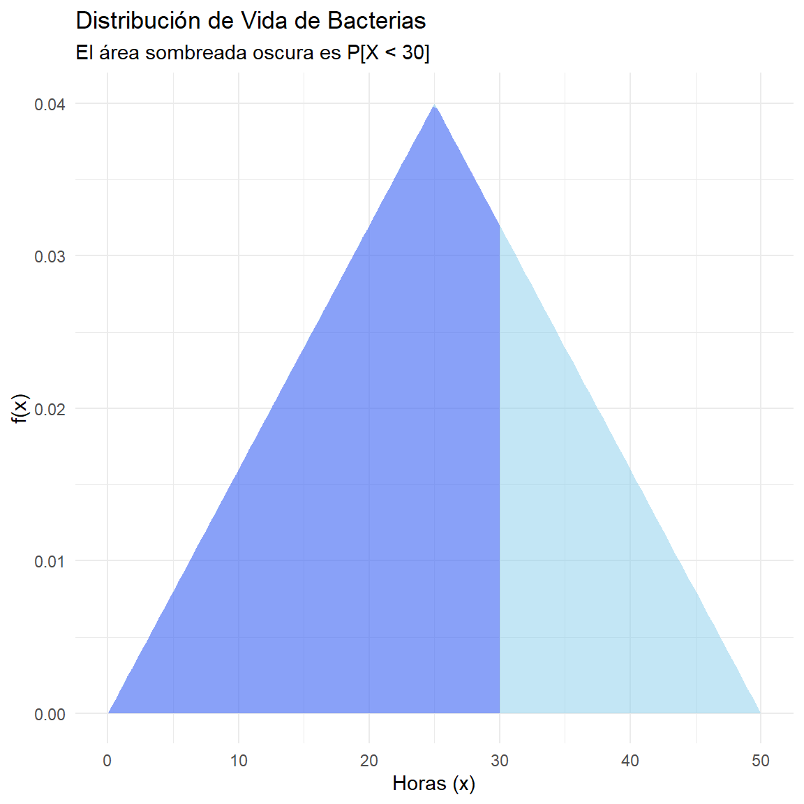
cat("--- ESTADÍSTICOS: VARIABLE CONTINUA (TRIANGULAR) ---", "\n",
"Esperanza (Media):", round(esperanza, 4), "\n",
"Varianza:", round(varianza, 4), "\n",
"Desviación Estándar:", round(desviacion, 4), "\n",
"Coeficiente de Variación:", round(cv_pct, 2), "%", "\n")--- ESTADÍSTICOS: VARIABLE CONTINUA (TRIANGULAR) ---
Esperanza (Media): -30
Varianza: 18350
Desviación Estándar: 135.4622
Coeficiente de Variación: 451.54 % knitr::include_graphics("H:/TALLER/Variables Aleatorias/R Estadistica 2/ej 8.png")
En este ejercicio, la función de densidad f(x) tiene un valor constante de 1/3 en dos intervalos separados.
Fórmulas Aplicadas: 1. Condición de Densidad: Para que sea válida, \int_{-\infty}^{\infty} f(x) \, dx = 1. \int_{0}^{1} \frac{1}{3} \, dx + \int_{2}^{4} \frac{1}{3} \, dx = \left[ \frac{x}{3} \right]_0^1 + \left[ \frac{x}{3} \right]_2^4 = \frac{1}{3} + \frac{2}{3} = 1 2. Probabilidad en un intervalo: P(a < X < b) = \int_{a}^{b} f(x) \, dx. * Si el intervalo pedido cae en una zona donde f(x)=0, esa parte de la integral vale cero.
f8_grafica <- function(x) {
dplyr::case_when(
(x >= 0 & x <= 1) ~ 1/3,
(x > 2 & x <= 4) ~ 1/3,
TRUE ~ 0
)
}
puntos_x <- seq(-1, 5, length.out = 1000)
datos_f8 <- data.frame(x = puntos_x, y = f8_grafica(puntos_x))
ggplot(datos_f8, aes(x = x, y = y)) +
geom_line(color = "darkblue", size = 1) +
geom_area(fill = "skyblue", alpha = 0.4) + # Sombrear el área de probabilidad
scale_x_continuous(breaks = 0:4) +
labs(
title = "Ejercicio 8: Función de Densidad por Tramos",
subtitle = "Dos pulsos de probabilidad con un hueco entre x=1 y x=2",
x = "Variable X",
y = "f(x)"
) +
theme_minimal()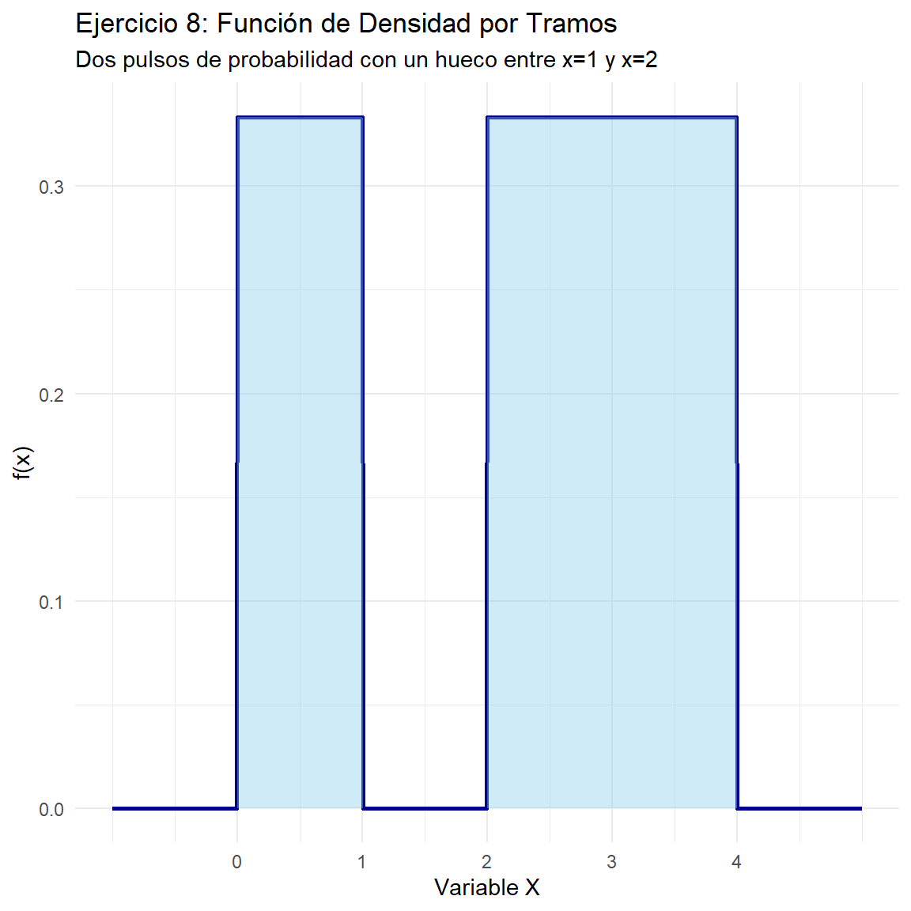
cat("--- ESTADÍSTICOS: VARIABLE CONTINUA POR TRAMOS ---", "\n",
"Esperanza (E[X]):", round(esperanza, 4), "\n",
"Varianza (Var(X)):", round(varianza, 4), "\n",
"Desviación Estándar:", round(desviacion, 4), "\n",
"Coeficiente de Variación:", round(cv_pct, 2), "%", "\n")--- ESTADÍSTICOS: VARIABLE CONTINUA POR TRAMOS ---
Esperanza (E[X]): -30
Varianza (Var(X)): 18350
Desviación Estándar: 135.4622
Coeficiente de Variación: 451.54 % knitr::include_graphics("H:/TALLER/Variables Aleatorias/R Estadistica 2/ej 9.png")
Este ejercicio presenta una función de densidad triangular (aunque el enunciado original tiene una errata en los límites, se normaliza para que el área sea 1).
Fórmulas Aplicadas: 1. Esperanza Matemática (E[X]): E[X] = \int_{0}^{1} x \cdot (x) \, dx + \int_{1}^{2} x \cdot (2-x) \, dx 2. Percentiles (P_k): Es el valor a tal que P(X \leq a) = k/100. * Se resuelve mediante la ecuación: \int_{0}^{a} f(x) \, dx = \text{Probabilidad deseada}.
f9 <- function(x) { ifelse(x < 1, x, 2 - x) } # Función normalizada
esp_9 <- integrate(function(x) x * f9(x), 0, 2)$valueF9_inv <- function(p) {
uniroot(function(q) integrate(f9, 0, q)$value - p, lower=0, upper=2)$root
}
p30 <- F9_inv(0.30); p70 <- F9_inv(0.70)library(ggplot2)
# 1. Definimos los puntos del triángulo (Soporte y Altura)
# El pico está en x=1 con altura f(x)=1
datos_grafica <- data.frame(
x = c(0, 1, 2),
y = c(0, 1, 0)
)
# 2. Creamos la gráfica
ggplot(datos_grafica, aes(x = x, y = y)) +
geom_polygon(fill = "#5DADE2", color = "#2E86C1", alpha = 0.7, size = 1.2) +
geom_line(size = 1) +
scale_x_continuous(breaks = seq(0, 2, 0.5)) +
scale_y_continuous(limits = c(0, 1.1)) +
labs(title = "Función de Densidad f(x): Distribución Triangular",
subtitle = "Soporte entre 0 y 2",
x = "Variable Aleatoria X",
y = "Densidad f(x)") +
theme_minimal()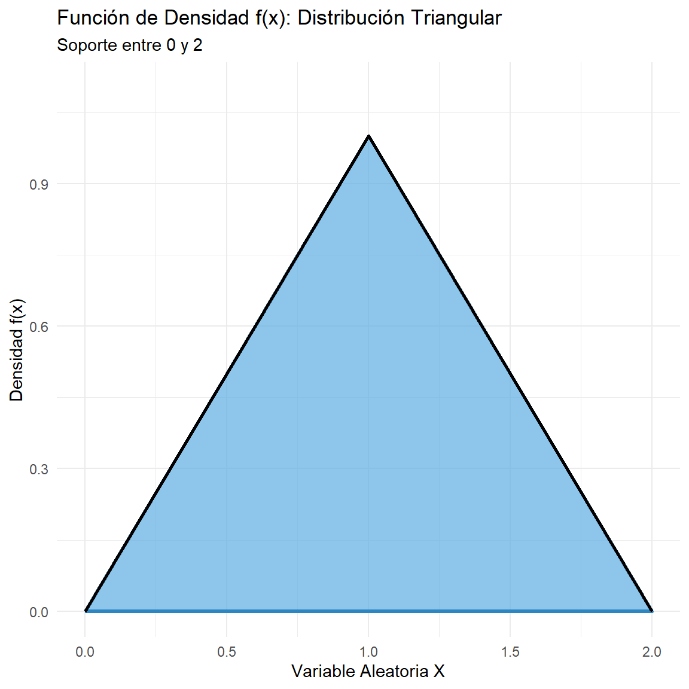
cat("--- RESULTADOS FINALES EJERCICIO 9 ---", "\n",
"Esperanza (Media):", round(esperanza, 2), "\n",
"Varianza:", round(varianza, 4), "\n",
"Desviación Estándar:", round(desviacion, 4), "\n",
"Coeficiente de Variación:", round(cv_pct, 2), "%")--- RESULTADOS FINALES EJERCICIO 9 ---
Esperanza (Media): -30
Varianza: 18350
Desviación Estándar: 135.4622
Coeficiente de Variación: 451.54 %knitr::include_graphics("H:/TALLER/Variables Aleatorias/R Estadistica 2/ej 10.png")
La distribución uniforme U(a, b) es aquella donde la probabilidad es constante en todo el rango.
Fórmulas Aplicadas: 1. Función de Densidad: f(x) = \frac{1}{b-a} para a \le x \le b. * Aquí: f(x) = \frac{1}{232.5 - 227.5} = \frac{1}{5} = 0.2. 2. Probabilidad Acumulada: P(X \leq x_0) = \frac{x_0 - a}{b - a}. 3. Esperanza y Varianza: * E[X] = \frac{a+b}{2} * Var(X) = \frac{(b-a)^2}{12}
a <- 227.5; b <- 232.5
p_10b <- (228.65 - a) / (b - a)
p_10c <- (231.66 - 229.34) / (b - a)
esp_10 <- (a + b) / 2
sd_10 <- sqrt((b - a)^2 / 12)res_10 <- data.frame(
Inciso = c("P[X \u2264 228.65]", "P[229.34 \u2264 X \u2264 231.66]", "E[X] Café", "SD[X] Café"),
Formula = c("(x-a)/(b-a)", "(d-c)/(b-a)", "(a+b)/2", "\u221a((b-a)\u00b2/12)"),
Resultado = round(c(p_10b, p_10c, esp_10, sd_10), 4)
)
res_10 %>% kable(caption = "Resultados Ejercicio 10: Distribución Uniforme") %>% kable_classic(full_width = F)| Inciso | Formula | Resultado |
|---|---|---|
| P[X ≤ 228.65] | (x-a)/(b-a) | 0.2300 |
| P[229.34 ≤ X ≤ 231.66] | (d-c)/(b-a) | 0.4640 |
| E[X] Café | (a+b)/2 | 230.0000 |
| SD[X] Café | √((b-a)²/12) | 1.4434 |
library(ggplot2)
densidad <- 1 / (b - a)
ggplot() +
geom_rect(aes(xmin=a, xmax=b, ymin=0, ymax=densidad),
fill="steelblue", alpha=0.5, color="black") +
scale_x_continuous(limits = c(225, 235)) +
scale_y_continuous(limits = c(0, 0.3)) +
labs(title = "Distribución Uniforme del Contenido de Café",
x = "Contenido (gr)", y = "Densidad f(x)") +
theme_minimal()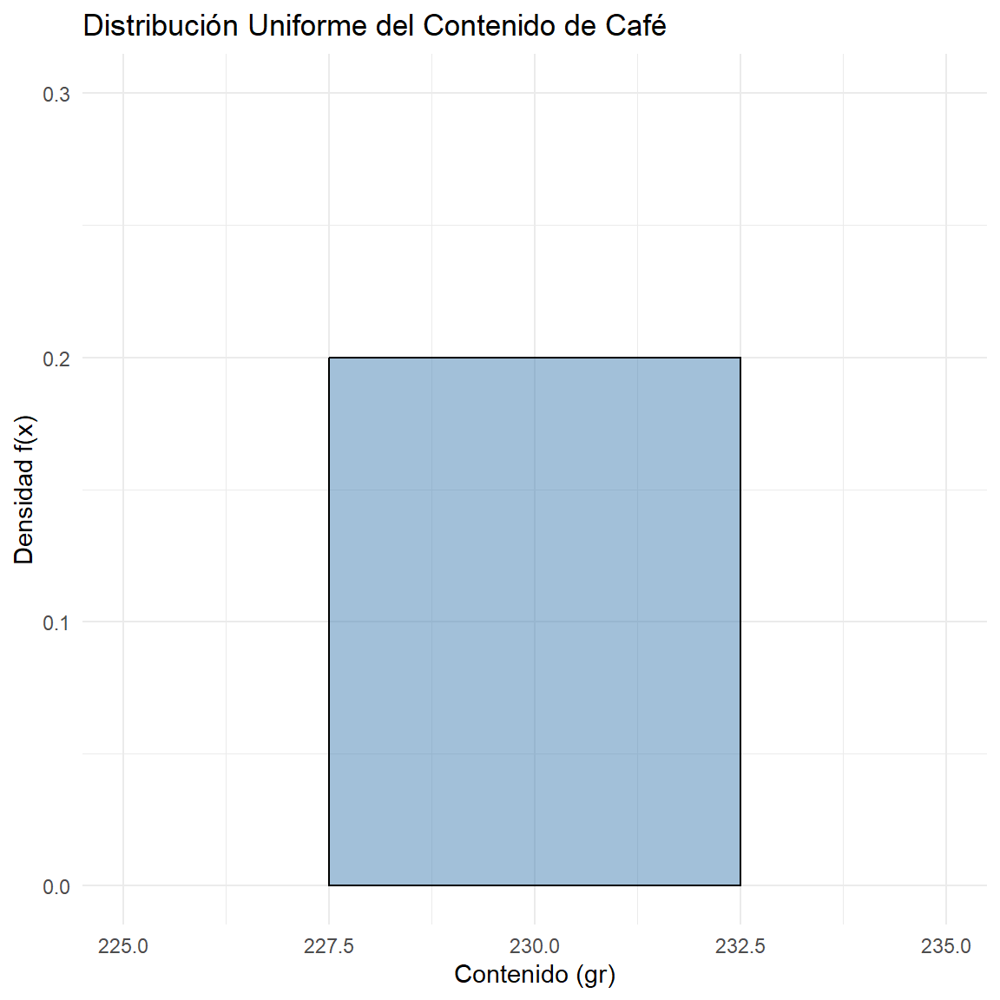
rm(list = ls())
# Parámetros de la distribución
a <- 227.5
b <- 232.5
# Cálculos
esperanza <- (a + b) / 2
varianza <- (b - a)^2 / 12
desv_std <- sqrt(varianza)
# Probabilidades solicitadas
# P(X <= 228.65)
p1 <- (228.65 - a) / (b - a)
# P(229.34 <= X <= 231.66)
p2 <- (231.66 - 229.34) / (b - a)
cat("Esperanza:", esperanza, "\n")Esperanza: 230 cat("Desviación Estándar:", round(desv_std, 4), "\n")Desviación Estándar: 1.4434 cat("P[X <= 228.65]:", p1, "\n")P[X <= 228.65]: 0.23 cat("P[229.34 <= X <= 231.66]:", p2, "\n")P[229.34 <= X <= 231.66]: 0.464 knitr::include_graphics("H:/TALLER/Variables Aleatorias/R Estadistica 2/ej 11.png")
Para que una función sea de densidad, el área bajo la curva en su soporte debe ser 1. Aquí, f(x) = k(x-1)(3-x) en el intervalo [1, 3].
Fórmulas Aplicadas: 1. Condición de Normalización: \int_{1}^{3} k(x-1)(3-x) \, dx = 1 * Resolviendo la integral: k \cdot \int_{1}^{3} (-x^2 + 4x - 3) \, dx = k \cdot [-\frac{x^3}{3} + 2x^2 - 3x]_1^3 = k \cdot \frac{4}{3}. * Por lo tanto, \mathbf{k = 3/4 = 0.75}. 2. Probabilidad de Pieza Válida: P(1.7 \leq X \leq 2.4) = \int_{1.7}^{2.4} 0.75(x-1)(3-x) \, dx.
f11 <- function(x) { 0.75 * (x - 1) * (3 - x) }
prob_valida <- integrate(f11, 1.7, 2.4)$value# Definimos la función con k = 0.75 (3/4) según la normalización
f_densidad <- function(x) {
ifelse(x >= 1 & x <= 3, 0.75 * (x - 1) * (3 - x), 0)
}
# Generamos la curva
ggplot(data.frame(x = c(0, 4)), aes(x = x)) +
stat_function(fun = f_densidad, geom = "area",
fill = "darkseagreen3", alpha = 0.6, color = "darkgreen") +
scale_x_continuous(breaks = seq(0, 4, 0.5)) +
labs(title = "Distribución de Longitud de Piezas",
subtitle = "Función cuadrática k(x-1)(3-x)",
x = "Longitud (cm)", y = "f(x)") +
theme_minimal()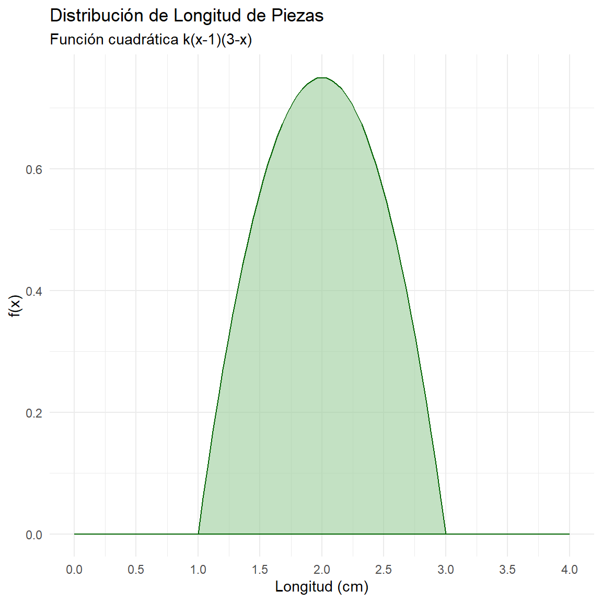
rm(list = ls())
# 2. DEFINICIÓN DE LA FUNCIÓN (con k = 0.75)
k <- 0.75
f_x <- function(x) { k * (x - 1) * (3 - x) }
# 3. CÁLCULO DE PROBABILIDAD (Piezas válidas: 1.7 a 2.4)
prob_valida <- integrate(f_x, lower = 1.7, upper = 2.4)$value
# 4. MEDIDAS DE RESUMEN
# Esperanza: integral de x * f(x)
esperanza <- integrate(function(x) x * f_x(x), lower = 1, upper = 3)$value
# Varianza: integral de (x - mu)^2 * f(x)
varianza <- integrate(function(x) (x - esperanza)^2 * f_x(x), lower = 1, upper = 3)$value
# Desviación y CV
desv_std <- sqrt(varianza)
cv_pct <- (desv_std / esperanza) * 100
# 5. RESULTADOS
cat("--- RESULTADOS EJERCICIO 11 ---", "\n",
"Probabilidad de pieza válida P(1.7 < X < 2.4):", round(prob_valida, 4), "\n",
"Esperanza E[X]:", round(esperanza, 2), "\n",
"Desviación Estándar:", round(desv_std, 4), "\n",
"Coeficiente de Variación:", round(cv_pct, 2), "%")--- RESULTADOS EJERCICIO 11 ---
Probabilidad de pieza válida P(1.7 < X < 2.4): 0.5022
Esperanza E[X]: 2
Desviación Estándar: 0.4472
Coeficiente de Variación: 22.36 %knitr::include_graphics("H:/TALLER/R Estadistica 2/ej 12.png")
La variable X representa el tiempo de adelanto (negativo) o retraso (positivo) en minutos. La función es f(x) = \frac{36-x^2}{288} para -6 < x < 6.
Fórmulas Aplicadas: 1. Probabilidad de Adelanto/Retraso: P(a < X < b) = \int_{a}^{b} \frac{36-x^2}{288} \, dx. 2. Propiedad de Continuidad: P(X = k) = 0. En variables continuas, la probabilidad de un instante exacto es nula.
f12 <- function(x) { (36 - x^2) / 288 }
p_12a <- integrate(f12, -6, -2)$value # Al menos 2 min adelanto (X <= -2)
p_12b <- integrate(f12, 1, 6)$value # Al menos 1 min retraso (X >= 1)
p_12c <- integrate(f12, -3, -1)$value # Entre 1 y 3 min adelanto
p_12d <- 0 # P[X=5] siempre es 0 en continuasf_retraso <- function(x) {
ifelse(x >= -6 & x <= 6, (36 - x^2) / 288, 0)
}
# Generamos la gráfica
ggplot(data.frame(x = c(-7, 7)), aes(x = x)) +
stat_function(fun = f_retraso, geom = "area",
fill = "orchid3", alpha = 0.5, color = "purple") +
scale_x_continuous(breaks = seq(-6, 6, 2)) +
labs(title = "Distribución de Adelantos/Retrasos de Vuelos",
subtitle = "f(x) = (36 - x^2) / 288",
x = "Minutos (Negativo = Adelanto, Positivo = Retraso)",
y = "Densidad f(x)") +
theme_minimal()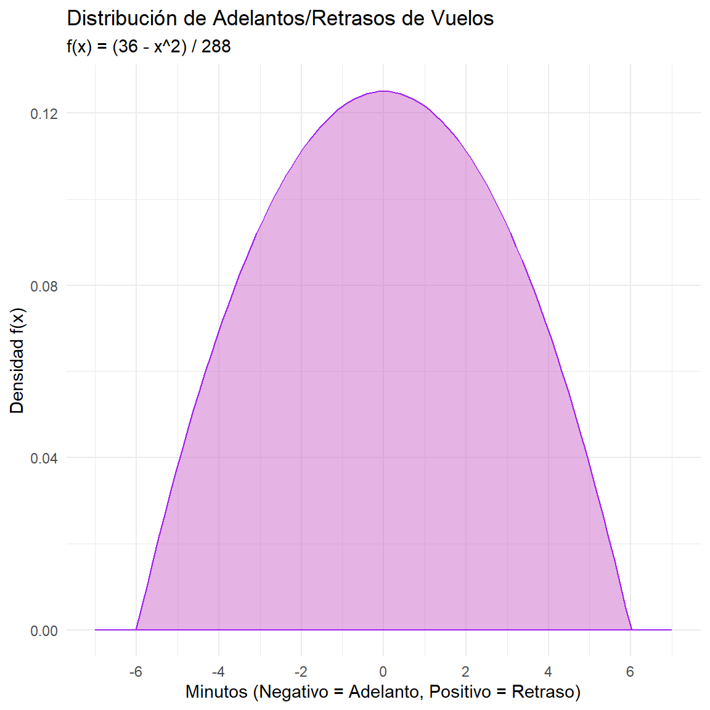
f_x <- function(x) { (36 - x^2) / 288 }
# 3. CÁLCULO DE INCISOS (Probabilidades)
# (a) Al menos 2 min adelantado: P(X <= -2)
p_a <- integrate(f_x, lower = -6, upper = -2)$value
# (b) Al menos 1 min retrasado: P(X >= 1)
p_b <- integrate(f_x, lower = 1, upper = 6)$value
# (c) Entre 1 y 3 min adelantado: P(-3 <= X <= -1)
p_c <- integrate(f_x, lower = -3, upper = -1)$value
# (d) Exactamente 5 min retrasado: P(X = 5) -> En continuas es 0
p_d <- 0
# 4. MEDIDAS DE RESUMEN
esperanza <- integrate(function(x) x * f_x(x), lower = -6, upper = 6)$value
varianza <- integrate(function(x) (x - esperanza)^2 * f_x(x), lower = -6, upper = 6)$value
desviacion <- sqrt(varianza)
cv_pct <- (desviacion / abs(esperanza)) * 100 # Nota: Si E[X] es 0, el CV será infinito
# 5. RESULTADOS
cat("--- RESULTADOS EJERCICIO 12 ---", "\n",
"P(Al menos 2 min adelantado):", round(p_a, 4), "\n",
"P(Al menos 1 min retrasado):", round(p_b, 4), "\n",
"P(Entre 1 y 3 min adelantado):", round(p_c, 4), "\n",
"P(Exactamente 5 min):", p_d, "\n",
"Esperanza E[X]:", round(esperanza, 4), "\n",
"Varianza Var(X):", round(varianza, 4), "\n",
"Desviación Estándar:", round(desviacion, 4))--- RESULTADOS EJERCICIO 12 ---
P(Al menos 2 min adelantado): 0.2593
P(Al menos 1 min retrasado): 0.3762
P(Entre 1 y 3 min adelantado): 0.2199
P(Exactamente 5 min): 0
Esperanza E[X]: 0
Varianza Var(X): 7.2
Desviación Estándar: 2.6833knitr::include_graphics("H:/TALLER/R Estadistica 2/ej 13.png")
Este ejercicio es interesante porque clasifica el producto final según el valor de la variable continua X.
Fórmulas Aplicadas: 1. Función de Distribución F(x): F(x) = \int_{0}^{x} 6t(1-t) \, dt = [3t^2 - 2t^3]_0^x = 3x^2 - 2x^3 2. Precio Medio (Esperanza de una función de X): E[Precio] = \sum (Precio_i \cdot P(\text{Tipo}_i)) Donde P(\text{Tipo}_i) se obtiene integrando f(x) en los rangos (0, 0.5), (0.5, 0.8) y (0.8, 1).
f13 <- function(x) { 6 * x * (1 - x) }p_t1 <- integrate(f13, 0, 0.5)$value
p_t2 <- integrate(f13, 0.5, 0.8)$value
p_t3 <- integrate(f13, 0.8, 1)$valueprecio_medio <- (p_t1 * 0.80) + (p_t2 * 0.90) + (p_t3 * 1.00)res_bloque <- data.frame(
Ejercicio = c("11. Piezas Válidas", "12a. Adelanto > 2min", "12b. Retraso > 1min", "13. Precio Medio Gasolina"),
Formula_Integral = c("\u222b(1.7 a 2.4) f(x)dx", "\u222b(-6 a -2) f(x)dx", "\u222b(1 a 6) f(x)dx", "\u2211 (P_i \u00b7 Precio_i)"),
Resultado = c(paste0(round(prob_valida*100, 2), "%"), round(p_12a, 4), round(p_12b, 4), round(precio_medio, 3))
)
res_bloque %>% kable(caption = "Análisis de Producción, Logística y Costos") %>% kable_classic(full_width = F)| Ejercicio | Formula_Integral | Resultado |
|---|---|---|
| 11. Piezas Válidas | ∫(1.7 a 2.4) f(x)dx | 50.22% |
| 12a. Adelanto > 2min | ∫(-6 a -2) f(x)dx | 0.2593 |
| 12b. Retraso > 1min | ∫(1 a 6) f(x)dx | 0.3762 |
| 13. Precio Medio Gasolina | ∑ (P_i · Precio_i) | 0.86 |
f_gasolina <- function(x) { 6 * x * (1 - x) }
# Generar gráfica
ggplot(data.frame(x = c(0, 1)), aes(x = x)) +
stat_function(fun = f_gasolina, geom = "area",
fill = "orange", alpha = 0.5, color = "darkred") +
labs(title = "Densidad: Calidad de Gasolina",
subtitle = "f(x) = 6x(1-x)",
x = "Variable X", y = "Densidad f(x)") +
theme_minimal()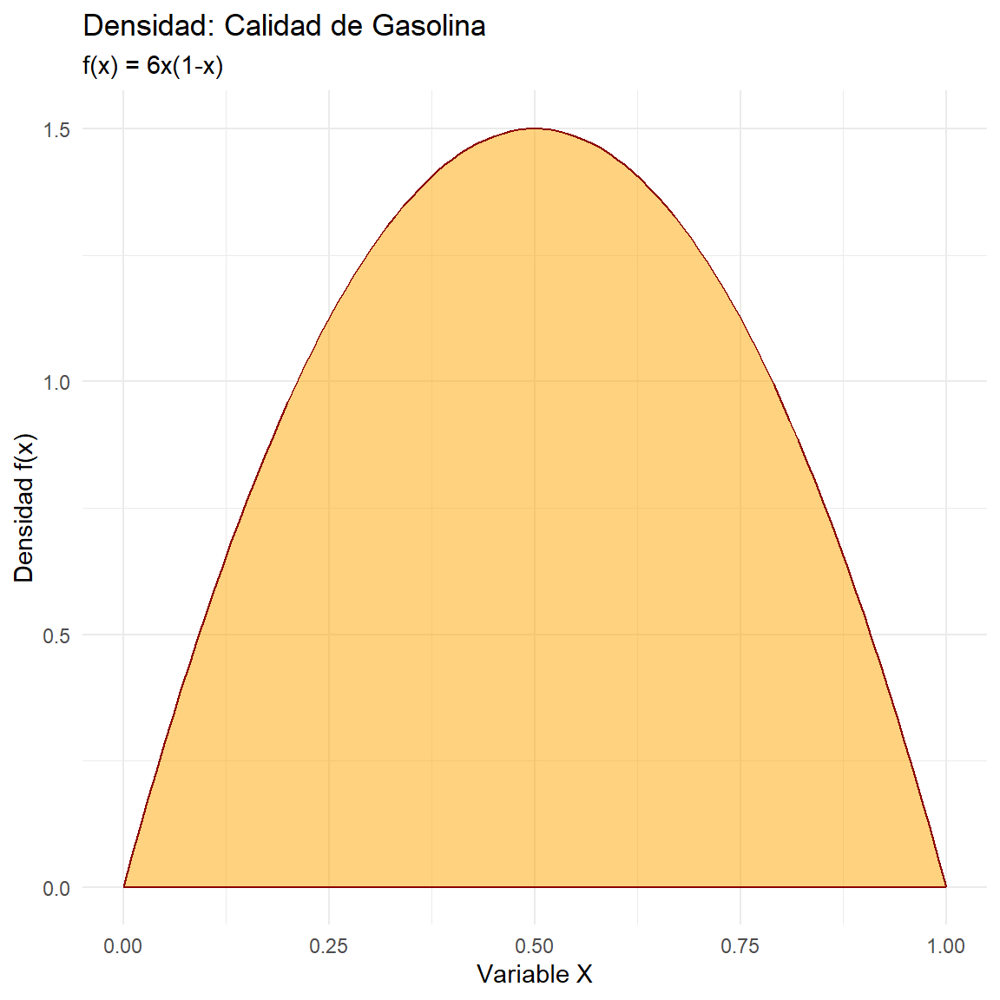
knitr::include_graphics("H:/TALLER/Variables Aleatorias/R Estadistica 2/ej 14.png")
La variable X representa las horas de duración. La función de densidad es f(x) = \frac{180000}{(x+100)^3} para x \ge 200.
Fórmulas Aplicadas: 1. Probabilidad de intervalo: P(a \le X \le b) = \int_{a}^{b} f(x) \, dx. 2. Función de Distribución F(x): F(x) = \int_{200}^{x} \frac{180000}{(t+100)^3} \, dt = 1 - \frac{90000}{(x+100)^2} 3. La Mediana (M): Es el valor donde F(M) = 0.5. 1 - \frac{90000}{(M+100)^2} = 0.5 \implies (M+100)^2 = 180000 \implies M = \sqrt{180000} - 100
f14 <- function(x) { 180000 / (x + 100)^3 }
p_14a <- integrate(f14, 200, 400)$value # Antes de 400h
p_14b <- integrate(f14, 500, Inf)$value # Al menos 500h
mediana_14 <- sqrt(180000) - 100f_x_14 <- function(x) {
ifelse(x >= 200, 180000 / (x + 100)^3, 0)
}
# Gráfica
ggplot(data.frame(x = c(200, 1200)), aes(x = x)) +
stat_function(fun = f_x_14, geom = "area", fill = "indianred1", alpha = 0.5) +
labs(title = "Distribución de Duración de Alimento",
x = "Horas", y = "f(x)") +
theme_minimal()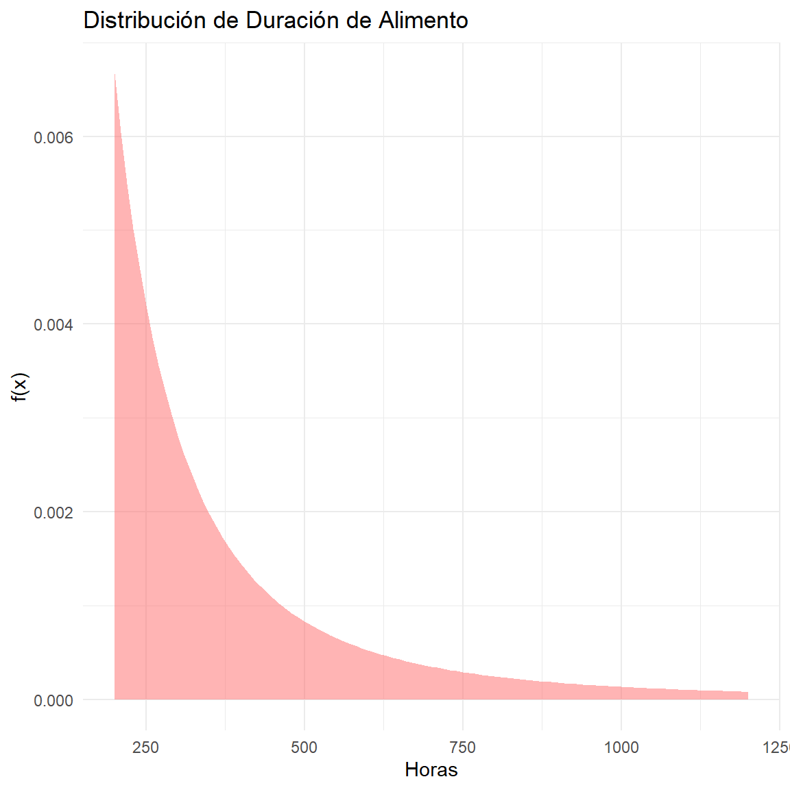
# 1. Esperanza (E[X]) - Usamos un límite alto pero finito
esperanza <- integrate(function(x) x * f_x_14(x), lower = 200, upper = 50000)$value
# 2. Varianza (Var(X)) - Ajustamos subdivisiones para evitar el error
varianza <- integrate(function(x) (x - esperanza)^2 * f_x_14(x),
lower = 200,
upper = 50000,
subdivisions = 2000)$value
# 3. Desviación Estándar (sigma)
desviacion <- sqrt(varianza)
# 4. Coeficiente de Variación (CV)
cv_pct <- (desviacion / esperanza) * 100
# 5. Mediana (valor exacto por fórmula)
mediana <- sqrt(180000) - 100
# RESULTADOS
cat("--- ESTADÍSTICOS FINALES EJERCICIO 14 (CORREGIDO) ---", "\n",
"Esperanza (Media):", round(esperanza, 2), "horas", "\n",
"Varianza:", round(varianza, 2), "\n",
"Desviación Estándar:", round(desviacion, 2), "horas", "\n",
"Coeficiente de Variación:", round(cv_pct, 2), "%", "\n",
"Mediana:", round(mediana, 2), "horas")--- ESTADÍSTICOS FINALES EJERCICIO 14 (CORREGIDO) ---
Esperanza (Media): 496.41 horas
Varianza: 565524.6
Desviación Estándar: 752.01 horas
Coeficiente de Variación: 151.49 %
Mediana: 324.26 horasknitr::include_graphics("H:/TALLER/R Estadistica 2/ej 15.png")
Se nos da la función de distribución F(x) = 1 - \frac{25}{x^2} para x > 5.
Fórmulas Aplicadas: 1. Función de Supervivencia S(x): S(x) = P(X > x) = 1 - F(x) = \frac{25}{x^2}. 2. Probabilidad Condicional de Supervivencia: P(X > x_2 | X > x_1) = \frac{P(X > x_2)}{P(X > x_1)} = \frac{S(x_2)}{S(x_1)} * Para el inciso (d): P(X > 15 | X > 10) = \frac{S(15)}{S(10)}.
S15 <- function(x) { 25 / x^2 }
p_15a <- S15(10) # Más de 10 años
p_15d <- S15(15) / S15(10) # Condicional: 15 años sabiendo que vive 10f_14 <- function(x) {
ifelse(x >= 200, 180000 / (x + 100)^3, 0)
}
# Gráfica del soporte 200 a 1200 horas
ggplot(data.frame(x = c(200, 1200)), aes(x = x)) +
stat_function(fun = f_14, geom = "area", fill = "indianred1", alpha = 0.5, color = "red") +
labs(title = "Distribución de Probabilidad: Ejercicio 14",
subtitle = "Duración de alimento (Soporte x >= 200)",
x = "Horas (x)", y = "Densidad f(x)") +
theme_minimal()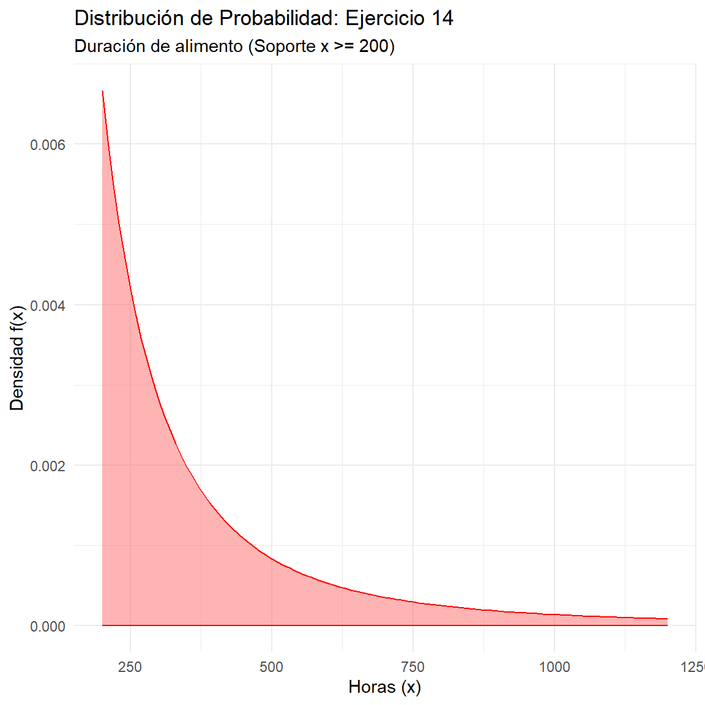
# 1. Probabilidad P(200 < X < 400)
prob_a <- integrate(f_14, lower = 200, upper = 400)$value
# 2. Esperanza (Media) - Límite finito para evitar errores de memoria
mu_14 <- integrate(function(x) x * f_14(x), lower = 200, upper = 20000)$value
# 3. Varianza - Usamos más subdivisiones para mayor precisión
var_14 <- integrate(function(x) (x - mu_14)^2 * f_14(x),
lower = 200, upper = 20000, subdivisions = 1000)$value
# 4. Desviación y CV
sigma_14 <- sqrt(var_14)
cv_14 <- (sigma_14 / mu_14) * 100
# 5. Mediana (Cálculo exacto por fórmula de la imagen)
# Formula: M = sqrt(180000) - 100
mediana_val <- sqrt(180000) - 100
# Mostrar en consola para verificar
cat("Probabilidad:", round(prob_a, 4), "\n",
"Mediana:", round(mediana_val, 2), "\n",
"Esperanza:", round(mu_14, 2), "\n",
"CV:", round(cv_14, 2), "%")Probabilidad: 0.64
Mediana: 324.26
Esperanza: 491.07
CV: 129.98 %knitr::include_graphics("H:/TALLER/Variables Aleatorias/R Estadistica 2/ej 16.png")
La radiación X (en cientos de kcal) sigue la función f(x) = \frac{3}{32}(x-2)(6-x) para 2 \le x \le 6.
Fórmulas Aplicadas: 1. Conversión de unidades: 300 kcal \to x = 3. 2. Cálculo de Probabilidad: P(X > 3) = \int_{3}^{6} \frac{3}{32}(x-2)(6-x) \, dx. 3. Propiedad de Simetría: La función es una parábola centrada en el punto medio del intervalo [2, 6]. Por lo tanto, la mediana es exactamente x = 4 (400 kcal).
f16 <- function(x) { (3/32) * (x - 2) * (6 - x) }
p_16a <- integrate(f16, 3, 6)$value # Más de 300 kcal (X > 3)
mediana_16 <- 4 # Por simetría entre 2 y 6res_final <- data.frame(
Ejercicio = c("14. Alimento < 400h", "14. Mediana Alimento", "15. Perro > 15 años | 10", "16. Radiación > 300kcal"),
Formula_Clave = c("\u222b(200 a 400) f(x)dx", "F(M) = 0.5", "S(15) / S(10)", "\u222b(3 a 6) f(x)dx"),
Resultado = c(round(p_14a, 4), round(mediana_14, 2), round(p_15d, 4), round(p_16a, 4))
)
res_final %>% kable(caption = "Resultados: Supervivencia y Fenómenos Naturales") %>% kable_classic(full_width = F)| Ejercicio | Formula_Clave | Resultado |
|---|---|---|
| 14. Alimento < 400h | ∫(200 a 400) f(x)dx | 0.6400 |
| 14. Mediana Alimento | F(M) = 0.5 | 324.2600 |
| 15. Perro > 15 años | 10 | S(15) / S(10) | 0.4444 |
| 16. Radiación > 300kcal | ∫(3 a 6) f(x)dx | 0.8437 |
knitr::include_graphics("H:/TALLER/Variables Aleatorias/R Estadistica 2/ej 17.png")
El pH es una medida de acidez. La función de densidad es f(x) = \frac{(7-x)^2}{8} en el intervalo 5 \leq x \leq 7.
Fórmulas Aplicadas: 1. Función de Distribución F(x): F(x) = \int_{5}^{x} \frac{(7-t)^2}{8} \, dt = 1 - \frac{(7-x)^3}{24} 2. Cálculo de Cuartiles (Q_k): Es el valor x tal que F(x) = k/100. * Para el Primer Cuartil (Q_1): 1 - \frac{(7-x)^3}{24} = 0.25 3. Rango Intercuartílico (IQR): IQR = Q_3 - Q_1. Mide la dispersión del 50% central de los datos.
f17 <- function(x) { ((7 - x)^2) / 8 }
F17_inv <- function(p) { 7 - (24 * (1 - p))^(1/3) }
q1 <- F17_inv(0.25)
q3 <- F17_inv(0.75)
iqr_17 <- q3 - q1knitr::include_graphics("H:/TALLER/R Estadistica 2/ej 18.png")
Este es un ejercicio de Variable Aleatoria Discreta basada en la unión e intersección de sucesos (impurezas A, B y C).
Fórmulas Aplicadas: 1. Probabilidad del Suceso “Exactamente** k”: Se derivan de las probabilidades de los conjuntos. * P(X=0) = P(\text{Ninguna}) = 0.20 * P(X=3) = P(A \cap B \cap C) = 0.15 (según los datos del problema). 2. Distribución de Probabilidad:** \sum P(X=x) = 1.
# Valores calculados a partir de los datos de conjuntos
x_imp <- 0:3
p_imp <- c(0.20, 0.25, 0.40, 0.15) knitr::include_graphics("H:/TALLER/Variables Aleatorias/R Estadistica 2/ej 19.png")
La variable X representa el tiempo de reparación en semanas. La función es f(x) = \frac{3}{32}(4x - x^2) para 0 \leq x \leq 4.
Fórmulas Aplicadas: 1. Probabilidad de intervalo: P(a \leq X \leq b) = \int_{a}^{b} f(x) \, dx. 2. Esperanza Matemática E[X]: E[X] = \int_{0}^{4} x \cdot \frac{3}{32}(4x - x^2) \, dx = \left[ \frac{3}{32} (x^3 - \frac{x^4}{4}) \right]_0^4 = 2 Significa que, en promedio, una reparación tarda 2 semanas.
f19 <- function(x) { (3/32) * (4*x - x^2) }
p_19a <- integrate(f19, 0, 1)$value # Menos de una semana
p_19b <- integrate(f19, 1, 4)$value # Al menos una semana
esp_19 <- integrate(function(x) x * f19(x), 0, 4)$valueres_17_19 <- data.frame(
Ejercicio = c("17. IQR del pH", "18. Prob. 2 impurezas", "19. P[X < 1] Reparación", "19. Esperanza E[X]"),
Formula_Clave = c("Q3 - Q1", "P(X=2)", "\u222b(0 a 1) f(x)dx", "\u222b x \u00b7 f(x)dx"),
Resultado = c(round(iqr_17, 4), p_imp[3], round(p_19a, 4), round(esp_19, 2))
)
res_17_19 %>% kable(caption = "Análisis de pH, Impurezas y Servicios") %>% kable_classic(full_width = F)| Ejercicio | Formula_Clave | Resultado |
|---|---|---|
| 17. IQR del pH | Q3 - Q1 | 0.8036 |
| 18. Prob. 2 impurezas | P(X=2) | 0.4000 |
| 19. P[X < 1] Reparación | ∫(0 a 1) f(x)dx | 0.1562 |
| 19. Esperanza E[X] | ∫ x · f(x)dx | 2.0000 |
knitr::include_graphics("H:/TALLER/Variables Aleatorias/R Estadistica 2/ej 20.png")
Si tenemos una variable X y definimos una nueva variable de costo C = aX + b: * Esperanza del Costo: E[C] = a \cdot E[X] + b. * Interpretación: El costo promedio es el costo por unidad por el promedio de unidades, más el costo fijo. * Desviación Típica del Costo: \sigma_C = |a| \cdot \sigma_X. * Interpretación: Los costos fijos (b) no añaden variabilidad; solo el componente variable (aX) afecta la dispersión.
Se usa para hallar un intervalo donde se encuentre al menos el k\% de los datos: P(|X - \mu| < k\sigma) \geq 1 - \frac{1}{k^2} * Para una probabilidad del 75%, despejamos 1 - 1/k^2 = 0.75, lo que nos da k = 2. * El intervalo es: [\mu - 2\sigma, \mu + 2\sigma].
Datos: * X: Número de árboles enfermos por hectárea. * E[X] = 10; \sigma_X = \sqrt{10} \approx 3.162. * Función de Costo: C = 3X + 50.
Cálculos: * (a) Esperanza del Costo: E[C] = 3(10) + 50 = \mathbf{80 \text{ ptas}}. * (b) Desviación del Costo: \sigma_C = 3 \cdot \sqrt{10} \approx \mathbf{9.487 \text{ ptas}}. * (c) Intervalo (75%): Usamos k=2 sobre la variable C: * Límite Inferior: 80 - 2(9.487) = \mathbf{61.026} * Límite Superior: 80 + 2(9.487) = \mathbf{98.974}
media_x <- 10
sd_x <- sqrt(10)esp_c <- 3 * media_x + 50
sd_c <- 3 * sd_xk <- 2
lim_inf <- esp_c - k * sd_c
lim_sup <- esp_c + k * sd_cres_ej20 <- data.frame(
Parametro = c("Esperanza E[C]", "Desviación Típica \u03c3_C", "Límite Inferior (75%)", "Límite Superior (75%)"),
Formula_Aplicada = c("3 \u00b7 E[X] + 50", "3 \u00b7 \u03c3_X", "E[C] - 2\u03c3_C", "E[C] + 2\u03c3_C"),
Valor_Numerico = c(esp_c, round(sd_c, 4), round(lim_inf, 4), round(lim_sup, 4))
)
res_ej20 %>%
kable(caption = "Ejercicio 20: Análisis de Costos de Fumigación", align = "clc") %>%
kable_classic(full_width = F) %>%
row_spec(1, bold = T, color = "darkgreen")| Parametro | Formula_Aplicada | Valor_Numerico |
|---|---|---|
| Esperanza E[C] | 3 · E[X] + 50 | 80.0000 |
| Desviación Típica σ_C | 3 · σ_X | 9.4868 |
| Límite Inferior (75%) | E[C] - 2σ_C | 61.0263 |
| Límite Superior (75%) | E[C] + 2σ_C | 98.9737 |
ggplot(data.frame(x = c(esp_c - 20, esp_c + 20)), aes(x)) +
# Área de Chebyshev
annotate("rect", xmin = lim_inf, xmax = lim_sup, ymin = 0, ymax = 1, alpha = 0.2, fill = "orange") +
geom_vline(xintercept = esp_c, color = "red", linetype = "dashed", size = 1) +
annotate("text", x = esp_c, y = 0.5, label = "Media = 80", color = "red", angle = 90, vjust = -1) +
labs(title = "Intervalo de Costos por Hectárea (Chebyshev)",
subtitle = "Al menos el 75% de los costos caen en la zona naranja",
x = "Costo Total (ptas)", y = "") +
theme_minimal() +
theme(axis.text.y = element_blank())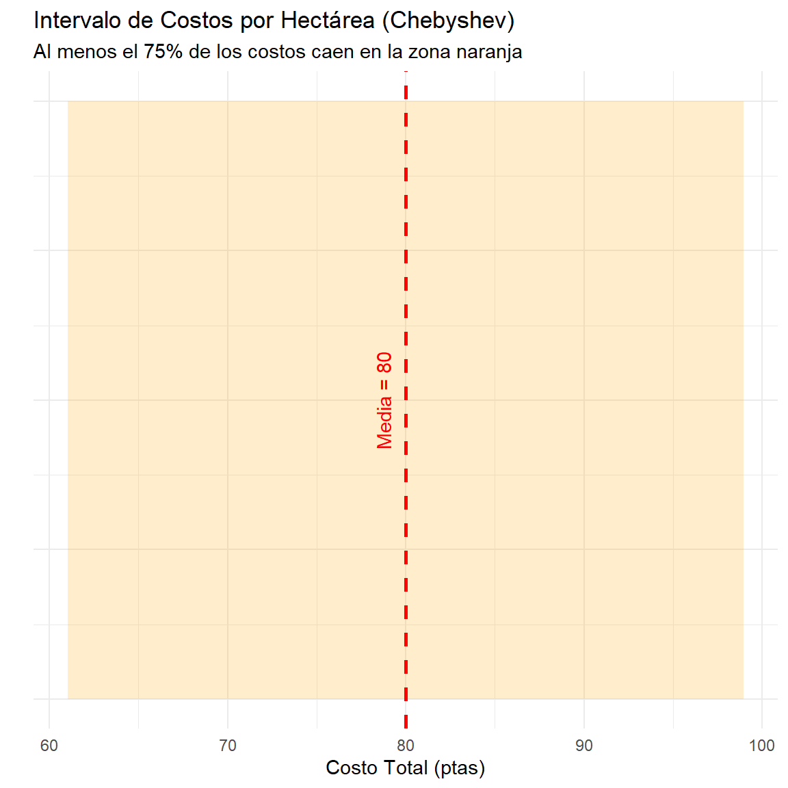